library(tidyverse) # data wrangling
library(sf) # Working with vector data
library(rmapshaper)# Simplify geometries
library(units) # manage your units
library(spdep)Lab 3: MAUP in Practice — Tessellations and Point-in-Polygon
ESS 523c: Environmental Data Science Applications
Set Up
Get Libraries
Data Science
Data
remotes::install_github("mikejohnson51/AOI") # get US counties
library(AOI) # county boundariesVisualization
library(gghighlight) # ggplot conditional highlighting
library(knitr) # table generation
library(kableExtra) # making tables prettyQuestion 1: Conus
Step 1.1: Get Conus
counties <- AOI::aoi_get(state = "conus", county = "all") %>%
st_transform(5070)st_crs(counties)Coordinate Reference System:
User input: EPSG:5070
wkt:
PROJCRS["NAD83 / Conus Albers",
BASEGEOGCRS["NAD83",
DATUM["North American Datum 1983",
ELLIPSOID["GRS 1980",6378137,298.257222101,
LENGTHUNIT["metre",1]]],
PRIMEM["Greenwich",0,
ANGLEUNIT["degree",0.0174532925199433]],
ID["EPSG",4269]],
CONVERSION["Conus Albers",
METHOD["Albers Equal Area",
ID["EPSG",9822]],
PARAMETER["Latitude of false origin",23,
ANGLEUNIT["degree",0.0174532925199433],
ID["EPSG",8821]],
PARAMETER["Longitude of false origin",-96,
ANGLEUNIT["degree",0.0174532925199433],
ID["EPSG",8822]],
PARAMETER["Latitude of 1st standard parallel",29.5,
ANGLEUNIT["degree",0.0174532925199433],
ID["EPSG",8823]],
PARAMETER["Latitude of 2nd standard parallel",45.5,
ANGLEUNIT["degree",0.0174532925199433],
ID["EPSG",8824]],
PARAMETER["Easting at false origin",0,
LENGTHUNIT["metre",1],
ID["EPSG",8826]],
PARAMETER["Northing at false origin",0,
LENGTHUNIT["metre",1],
ID["EPSG",8827]]],
CS[Cartesian,2],
AXIS["easting (X)",east,
ORDER[1],
LENGTHUNIT["metre",1]],
AXIS["northing (Y)",north,
ORDER[2],
LENGTHUNIT["metre",1]],
USAGE[
SCOPE["Data analysis and small scale data presentation for contiguous lower 48 states."],
AREA["United States (USA) - CONUS onshore - Alabama; Arizona; Arkansas; California; Colorado; Connecticut; Delaware; Florida; Georgia; Idaho; Illinois; Indiana; Iowa; Kansas; Kentucky; Louisiana; Maine; Maryland; Massachusetts; Michigan; Minnesota; Mississippi; Missouri; Montana; Nebraska; Nevada; New Hampshire; New Jersey; New Mexico; New York; North Carolina; North Dakota; Ohio; Oklahoma; Oregon; Pennsylvania; Rhode Island; South Carolina; South Dakota; Tennessee; Texas; Utah; Vermont; Virginia; Washington; West Virginia; Wisconsin; Wyoming."],
BBOX[24.41,-124.79,49.38,-66.91]],
ID["EPSG",5070]]nrow(counties)[1] 3108Step 1.2 Generate Centroids and Combine
county_centroids <- st_centroid(counties)
county_centroids_multi <- county_centroids %>%
st_geometry() %>%
st_combine()st_geometry_type(county_centroids_multi)[1] MULTIPOINT
18 Levels: GEOMETRY POINT LINESTRING POLYGON MULTIPOINT ... TRIANGLEStep 1.3: Create four tessellated surfaces and add individual IDs
Voronoi Tesselation
voronoi <- county_centroids_multi %>%
st_sfc(crs = 5070) %>%
st_voronoi() %>%
st_collection_extract("POLYGON") %>%
st_as_sf() %>%
mutate(id = 1:n()) %>%
st_cast()Triangulated Tesselation
delaunay <- county_centroids_multi %>%
st_sfc(crs = 5070) %>%
st_triangulate() %>%
st_collection_extract("POLYGON") %>%
st_as_sf() %>%
mutate(id = 1:n()) %>%
st_cast()Gridded Coverage
square_grid <- st_make_grid(counties, n = 70, square = TRUE) %>%
st_as_sf() %>%
mutate(id = 1:n()) %>%
st_cast()Hexagonal Coverage
hex_grid <- st_make_grid(counties, n = 70, square = FALSE) %>%
st_as_sf() %>%
mutate(id = 1:n()) %>%
st_cast()Check
nrow(voronoi)[1] 3108nrow(delaunay)[1] 6198nrow(square_grid)[1] 4900nrow(hex_grid)[1] 3718Step 1.4: Create single CONUS boundary and crop tessellations
conus_union <- counties %>%
summarise() %>%
st_cast()Crop tessellations
voronoi_crop <- st_intersection(voronoi, conus_union)
delaunay_crop <- st_intersection(delaunay, conus_union)Filter Grids
square_crop <- st_filter(square_grid, conus_union)
hex_crop <- st_filter(hex_grid, conus_union)Step 1.5 Simplify boundary using Visvalingam Algorithm
boundary_original <- counties %>%
summarise() %>%
st_cast()Simplify using Visvalingam
boundary_simplified <- boundary_original %>%
rmapshaper::ms_simplify(keep = 0.02, keep_shapes = TRUE)Validation Check
# Check: Is the simplified boundary valid?
st_is_valid(boundary_simplified)[1] TRUE# Check: Does it still contain all of CONUS?
st_bbox(boundary_simplified) xmin ymin xmax ymax
-2360167.5 259157.7 2256608.6 3177425.2 # Check: Visual comparison
plot(boundary_original, main = "Original")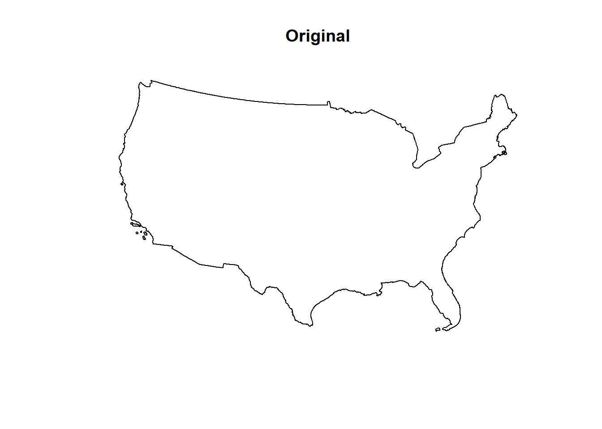
plot(boundary_simplified, main = "Simplified")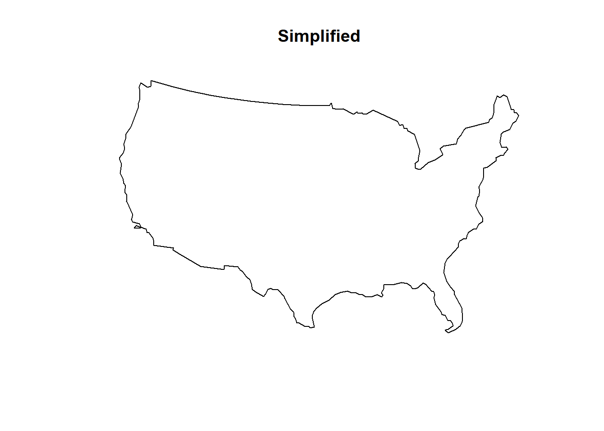
Compare points
original_pts <- mapview::npts(boundary_original)
simplified_pts <- mapview::npts(boundary_simplified)
original_pts[1] 11292simplified_pts[1] 229original_pts - simplified_pts[1] 11063The original CONUS boundary contained 11,292 vertices, while the simplified boundary contained only 229 vertices, resulting in a reduction of 11,063 vertices. This represents a decrease in complexity and increases computational efficiency due to the decrease in geometric comparisons required during clipping. This does have a precision trade-off, which is important along coastlines and borders, but it’s okay for this use since it is not being used for analysis.
Now crop
voronoi_crop <- st_intersection(voronoi, boundary_simplified)
delaunay_crop <- st_intersection(delaunay, boundary_simplified)
square_crop <- st_filter(square_grid, boundary_simplified)
hex_crop <- st_filter(hex_grid, boundary_simplified)Step 1.6: Function for plotting
plot_surface <- function(arg1, arg2) {
ggplot(data = arg1) +
geom_sf(fill = "white", color = "navy", linewidth = 0.2) +
theme_void() +
labs(
title = arg2,
caption = paste("Number of features:", nrow(arg1))
)
}Step 1.7: Create Plots
p1 <- plot_surface(counties, "CONUS Counties")
p1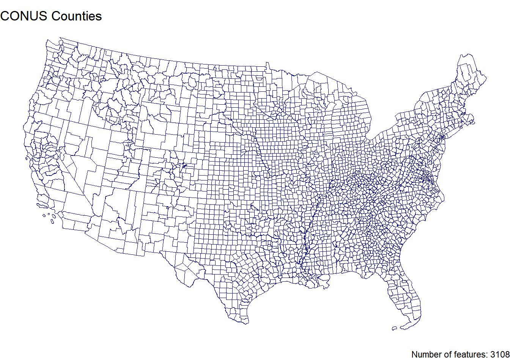
p2 <- plot_surface(voronoi_crop, "Voronoi Tessellation")
p2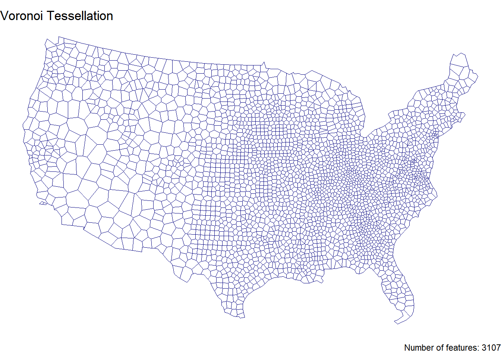
p3 <- plot_surface(delaunay_crop, "Delaunay Triangulation")
p3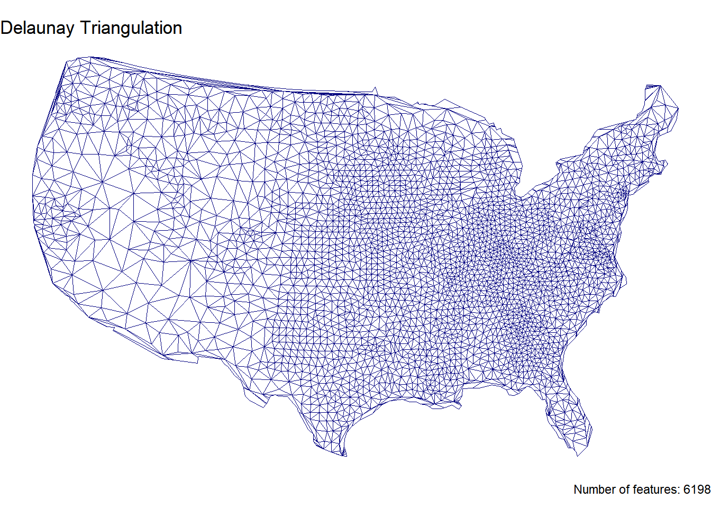
p4 <- plot_surface(square_crop, "Square Grid Coverage")
p4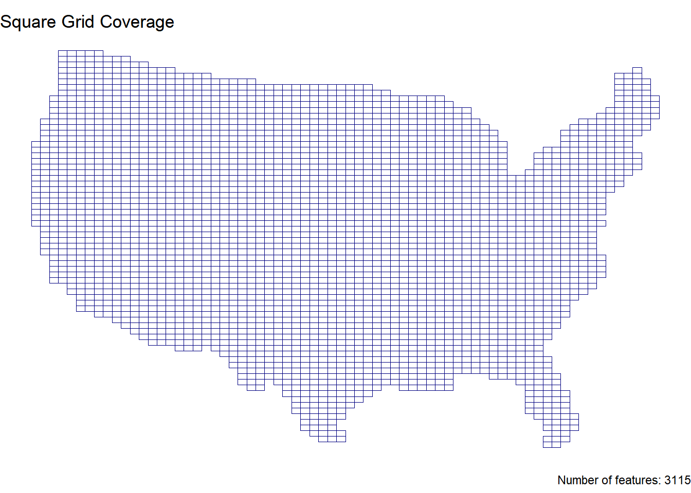
p5 <- plot_surface(hex_crop, "Hexagonal Grid Coverage")
p5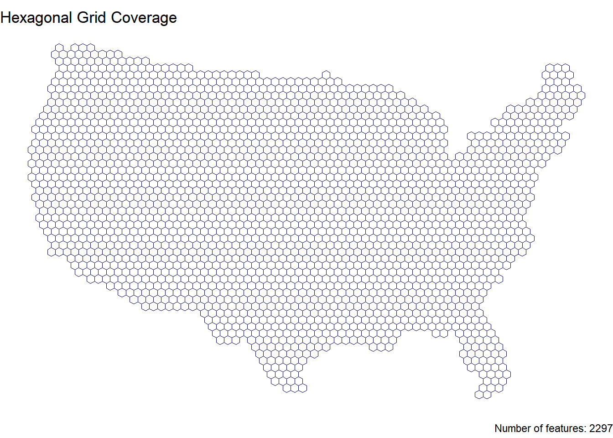
Question 2: Functions to summarize tessellated surfaces
Step 2.1 Function to take an sf object and create a data frame
sum_tess <- function(arg1, arg2) {
area_km2 <- arg1 %>%
st_area() %>%
set_units(km^2) %>%
drop_units()
data.frame(
surface = arg2,
n_features = nrow(arg1),
mean_area_km2 = mean(area_km2),
sd_area_km2 = sd(area_km2),
total_area_km2 = sum(area_km2)
)
}Step 2.2 Summarize each surface
sum_tess(counties, "Counties") surface n_features mean_area_km2 sd_area_km2 total_area_km2
1 Counties 3108 2605.05 3443.712 8096496sum_tess(voronoi_crop, "Voronoi") surface n_features mean_area_km2 sd_area_km2 total_area_km2
1 Voronoi 3107 2603.935 2914.885 8090426sum_tess(delaunay_crop, "Delaunay") surface n_features mean_area_km2 sd_area_km2 total_area_km2
1 Delaunay 6198 1290.379 1599.368 7997771sum_tess(square_crop, "Square Grid") surface n_features mean_area_km2 sd_area_km2 total_area_km2
1 Square Grid 3115 2761.289 1.179484e-11 8601414sum_tess(hex_crop, "Hex Grid") surface n_features mean_area_km2 sd_area_km2 total_area_km2
1 Hex Grid 2297 3781.179 1.812003e-11 8685368Step 2.3 Bind them into a table
tess_summary <- bind_rows(
sum_tess(counties, "Counties"),
sum_tess(voronoi_crop, "Voronoi"),
sum_tess(delaunay_crop, "Delaunay"),
sum_tess(square_crop, "Square Grid"),
sum_tess(hex_crop, "Hex Grid")
)Step 2.4 Print as a nice table
tess_summary %>%
mutate(
mean_area_km2 = round(mean_area_km2, 2),
sd_area_km2 = round(sd_area_km2, 2),
total_area_km2 = round(total_area_km2, 2)
) %>%
kable(caption = "Summary of CONUS Tessellated Surfaces") %>%
kable_styling(full_width = FALSE)| surface | n_features | mean_area_km2 | sd_area_km2 | total_area_km2 |
|---|---|---|---|---|
| Counties | 3108 | 2605.05 | 3443.71 | 8096496 |
| Voronoi | 3107 | 2603.93 | 2914.89 | 8090426 |
| Delaunay | 6198 | 1290.38 | 1599.37 | 7997771 |
| Square Grid | 3115 | 2761.29 | 0.00 | 8601414 |
| Hex Grid | 2297 | 3781.18 | 0.00 | 8685368 |
The tessellations show clear differences in feature count and area, which directly affect point-in-polygon results. Counties and Voronoi polygons have similar mean areas, but counties show higher variability due to irregular boundaries, making them more susceptible to MAUP. Voronoi reduces some bias by using centroid-based proximity but still reflects uneven spatial distribution of counties.
Delaunay has the highest number of features andthe smallest mean area, allowing for finer spatial resolution and better detection of local patterns, but at increased computational cost. In contrast, square and hex grids have uniform areas, which improves consistency in analysis and reduces MAUP effects related to area variability. However, their coarser resolution (especially hex) may smooth over local detail.
Delaunay is most computationally expensive due to the high feature count, while hex grids are most efficient. Overall, finer tessellations capture more spatial detail but increase computational demand, while regular grids improve efficiency at the cost of resolution.
Question 3: Dam Distribution Analysis and Tesselation Selection
Add potential extra packages
library(janitor)
library(viridis)
library(patchwork)Step 3.1 Read and Clean Dam Data
# Prefer a local NID CSV named `nation.csv`; otherwise download to that filename
nid_url <- "https://nid.sec.usace.army.mil/api/nation/csv"
dir.create("data", showWarnings = FALSE)
nid_dest <- "data/nation.csv"
if (file.exists(nid_dest)) {
message("Using local NID file: ", nid_dest)
} else {
tryCatch({
message("Downloading NID CSV to: ", nid_dest)
download.file(nid_url, nid_dest, quiet = FALSE, mode = "wb")
}, error = function(e) {
message("NID download failed: ", e$message)
})
}
# read the CSV (FIXED to avoid parsing issues)
if (!file.exists(nid_dest)) stop("NID CSV not found at ", nid_dest)
dams <- readr::read_csv(
nid_dest,
skip = 1,
show_col_types = FALSE,
col_types = cols(.default = col_character())
) %>%
janitor::clean_names()
# convert coordinates to numeric
dams <- dams %>%
mutate(
latitude = as.numeric(latitude),
longitude = as.numeric(longitude)
)
# CONUS boundary
usa <- AOI::aoi_get(state = "conus") %>%
st_union() %>%
st_transform(5070)
# convert to sf and filter
dams2 <- dams %>%
filter(!is.na(latitude), !is.na(longitude)) %>%
st_as_sf(coords = c("longitude", "latitude"), crs = 4326) %>%
st_transform(5070) %>%
st_filter(usa)Step 3.2 Point in Polygon Function
pip_count <- function(arg1, arg2, arg3) {
id_sym <- rlang::sym(arg3)
counts <- st_join(arg2, arg1, left = TRUE) %>%
st_drop_geometry() %>%
count(!!id_sym, name = "n")
out <- arg2 %>%
left_join(counts, by = arg3) %>%
mutate(n = replace_na(n, 0))
return(out)
}Step 3.3 Apply point in polygon counts to five surfaces
counties_dams <- pip_count(dams2, counties, "fip_code")
voronoi_dams <- pip_count(dams2, voronoi_crop, "id")
delaunay_dams <- pip_count(dams2, delaunay_crop, "id")
square_dams <- pip_count(dams2, square_crop, "id")
hex_dams <- pip_count(dams2, hex_crop, "id")Step 3.4 Plotting function for dam courts
plot_dams <- function(arg1, arg2) {
ggplot(data = arg1) +
geom_sf(aes(fill = n), color = NA) +
scale_fill_viridis_c(option = "viridis", na.value = "white") +
theme_void() +
labs(
title = arg2,
caption = paste("Number of dams:", sum(arg1$n, na.rm = TRUE))
)
}Step 3.5 Plot!
p1 <- plot_dams(counties_dams, "Counties")
p1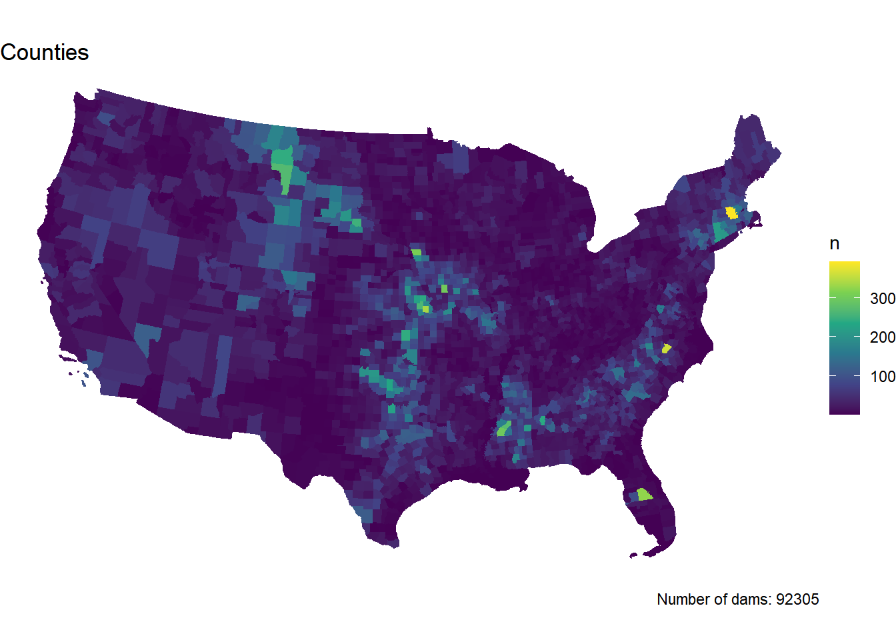
p2 <- plot_dams(voronoi_dams, "Voronoi")
p2p3 <- plot_dams(delaunay_dams, "Delaunay")
p3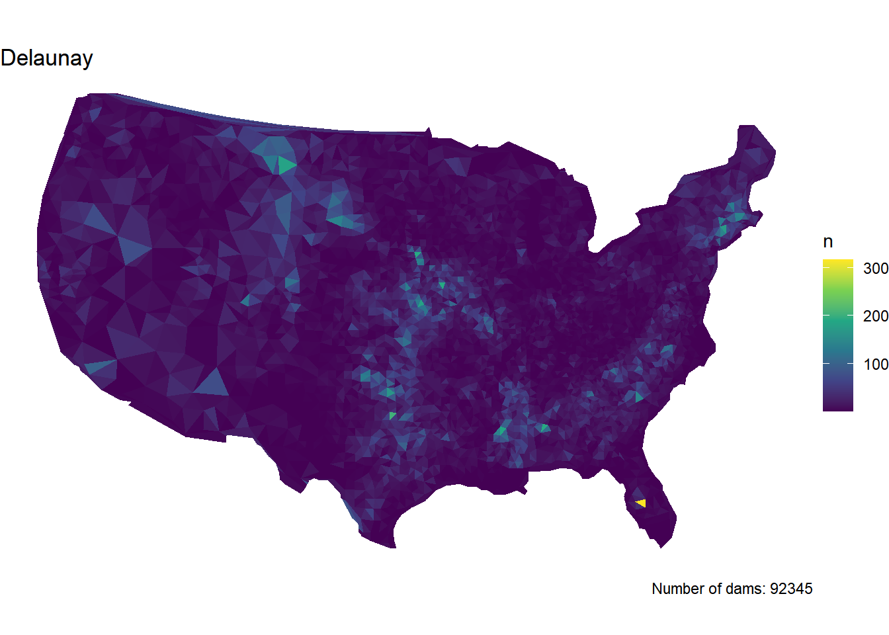
p4 <- plot_dams(square_dams, "Square Grid")
p4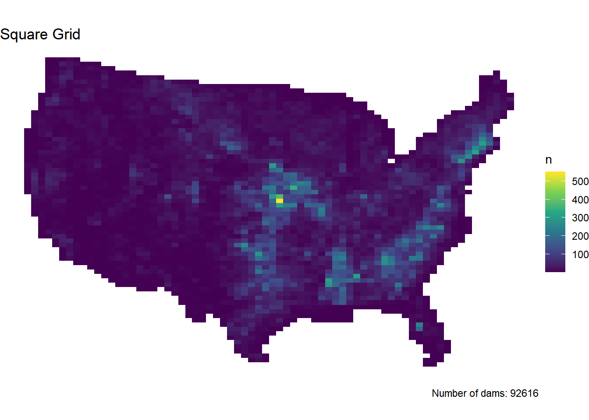
p5 <- plot_dams(hex_dams, "Hex Grid")
p5Step 3.6 Policy Analysis
a. Side by side comparison of dam clustering under different tessellations.
(p1 | p2 | p3) / (p4 | p5)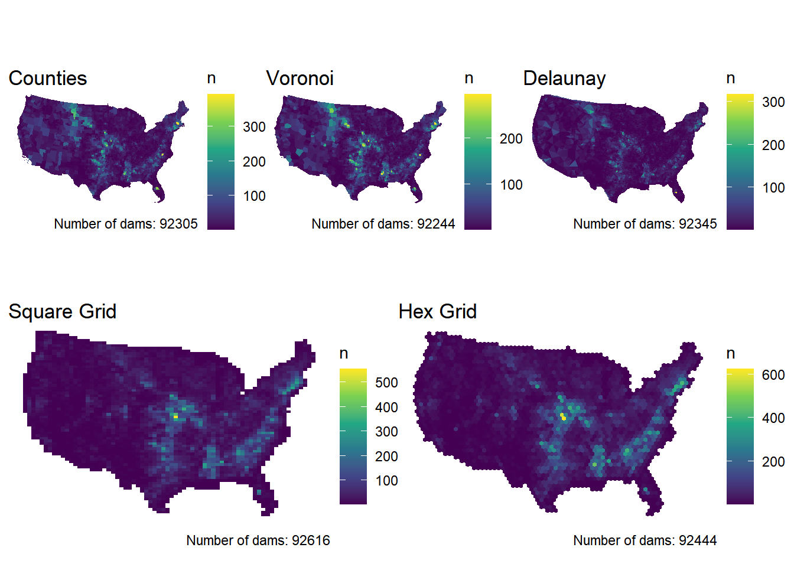
c. Which single tessellation would you recommend to a dam operations manager seeking to understand geographic clustering? Justify your choice by addressing: - Does the tessellation align with natural or management decision-making units (e.g., river basins, states, hydrologic regions)? - Does it reveal meaningful patterns without over-fragmenting the landscape or creating artificial boundaries? - How does MAUP influence your recommendation—are other tessellations equally valid, just for different questions? - How did simplification affect your choice? Would a coarser or finer simplification (different keep percentage) change your recommendation? - What does “best supports management decisions” mean concretely in your context—does it matter more that hot spots are obvious, or that boundaries align with jurisdictions?
As seen in the image above, several regions show clear differences based on tessellation choice. In the Southeast, Delaunay and Voronoi have localized hotspots, while the square and hex grids have broader areas of moderate density. This occurs because Delaunay has 6,198 tiles, the smallest mean area of 1290 km squared, and captures fine-scale variation. Meanwhile, grids have fewer tiles, uniform area, and aggregate counts over larger, consistent units. In the Midwest, Voronoi reveals clustered patterns with centroid spacing, while counties show more irregular patterns due to high area variability (sd 3443 km squared). In contrast, grid-based tessellations reduce this variability (sd = 0), producing more uniform and less detailed results. In the Western U.S., counties and Voronoi have clustering along river systems and developed corridors, while hex and square grids generalize these into larger regions, masking finer structure. This is due to geometry and tile size as Voronoi responds to centroid spacing, while grids have fixed spatial units. As shown in Q2, grids have larger mean areas (square at 2761 km squared, hex at 3781 km squared), which smooths local clustering. These differences illustrate MAUP, where changing the size and shape of spatial units alters the observed distribution of dams.
For a dam operations manager, I would recommend the hexagonal grid tessellation. It provides a good balance between detail and clarity. Counties have very uneven sizes, which can make patterns harder to understand, while square grids can introduce artificial, blocky patterns due to their alignment. On the other hand Delaunay creates many small tiles, which adds a lot of detail but can make the map harder to read. The hex grid avoids these issues by using consistent, evenly sized areas which makes it easier to see and compare regional clustering patterns. While it does not perfectly match natural boundaries like river basins, it still provides a clear and consistent way to visualize where dams are concentrated.
MAUP influences this decision, since different tessellations can show different patterns from the same data. No single method is “correct” as each highlights different aspects of the distribution. Delaunay is useful for identifying very fine-scale clustering, while counties may be more useful when decisions need to align with administrative boundaries. The simplification step (keep ≈ 0.02) only affects the outer boundary used for clipping and improves computational efficiency, so it does not change the main patterns seen in the tessellations. Overall, the hex grid is the best choice because it clearly shows meaningful hotspots without adding unnecessary complexity, making it easier for decision-makers to interpret and use.
Question 4:
Step 4.1 Filter and Count Dams
Select purposes that represent major categories of dams tied to energy production (H), risk management (C), water use (I), and public use (R), to compare across different management priorities.
hydro_dams <- dams2 %>%
filter(grepl("H", purposes))
flood_dams <- dams2 %>%
filter(grepl("C", purposes))
irrigation_dams <- dams2 %>%
filter(grepl("I", purposes))
recreation_dams <- dams2 %>%
filter(grepl("R", purposes))Count each subset across the cropped hexagonal tessellation
hydro_hex <- pip_count(hydro_dams, hex_crop, "id")
flood_hex <- pip_count(flood_dams, hex_crop, "id")
irrigation_hex <- pip_count(irrigation_dams, hex_crop, "id")
recreation_hex <- pip_count(recreation_dams, hex_crop, "id")Step 4.2 Highlight Hotspots
hydro_thresh <- mean(hydro_hex$n) + sd(hydro_hex$n)
flood_thresh <- mean(flood_hex$n) + sd(flood_hex$n)
irrigation_thresh <- mean(irrigation_hex$n) + sd(irrigation_hex$n)
recreation_thresh <- mean(recreation_hex$n) + sd(recreation_hex$n)p_hydro <- plot_dams(hydro_hex, "Hydroelectric Dams") +
gghighlight(n > hydro_thresh)
p_flood <- plot_dams(flood_hex, "Flood Control Dams") +
gghighlight(n > flood_thresh)
p_irrigation <- plot_dams(irrigation_hex, "Irrigation Dams") +
gghighlight(n > irrigation_thresh)
p_recreation <- plot_dams(recreation_hex, "Recreation Dams") +
gghighlight(n > recreation_thresh)p_hydro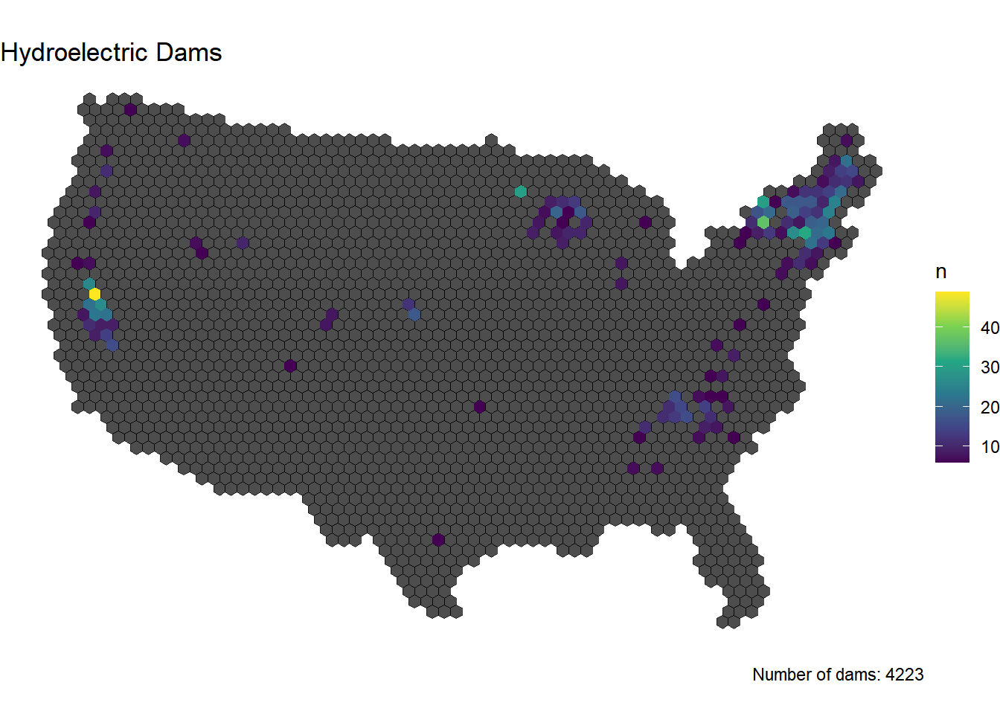
p_flood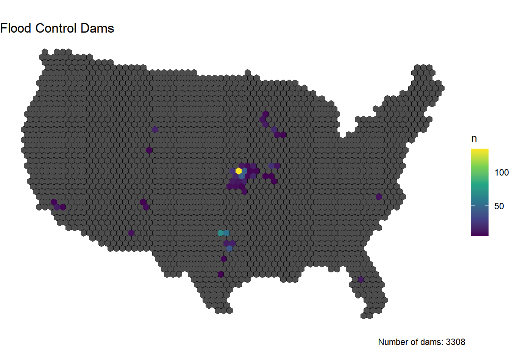
p_irrigation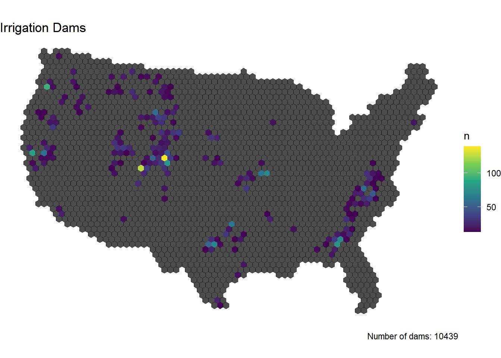
p_recreation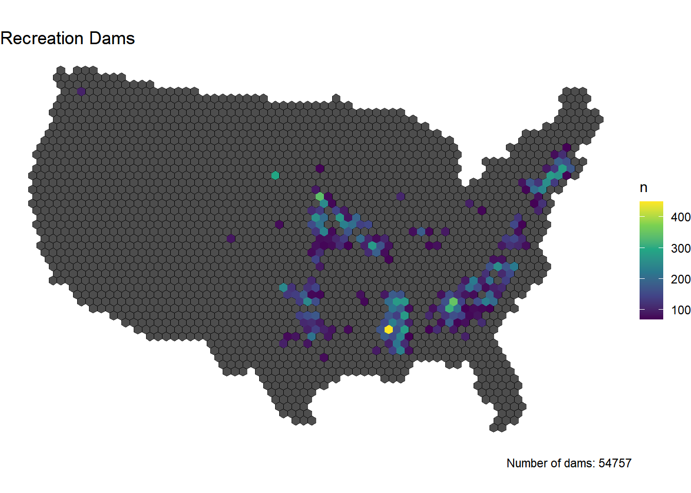
Step 4.3 Geographic Distribution of Dams
The geographic distribution of dams generally makes sense and reflects known physical and human factors. Hydroelectric dams are concentrated in mountainous and high-flow areas such as the Pacific Northwest. Flood control dams are clustered in the central U.S., especially around the Mississippi River basin, where flood risk is higher. Irrigation dams are most common in the western United States, particularly in arid regions like California where water storage is critical for agriculture. Recreation dams are more widely distributed but show strong clustering near populated areas, where demand for recreation is high. These patterns align closely with major river systems, climate, and topography. Areas with dense river networks and higher precipitation have more flood control dams, while arid regions rely heavily on irrigation dam infrastructure. Mountainous regions support hydroelectric dams due to steeper gradients and higher energy potential. This confirms that dam placement is strongly tied to both natural hydrology and human water needs.
The hexagonal tessellation helps reveal these patterns clearly by using consistent spatial units, but it also smooths some local variation. Smaller, more detailed tessellations (like Delaunay) might show finer clustering along specific rivers, while larger or more uniform grids may generalize patterns across regions. This means that tessellation choice can influence how “clustered” dams appear, even though the underlying distribution is the same.
I would expect irrigation and hydroelectric dams to show different LISA hotspot patterns compared to other dams. Irrigation dams will likely cluster in the arid West, while hydroelectric dams will cluster in mountainous regions, leading to more specialized and region-specific hotspots.
Question 5: Spatial Correlation of Dam Attributes: Introduction to Spatial Regression
Step 5.1 Aggregate dam attributes by tile
Convert data to numeric
dams2 <- dams %>%
mutate(
latitude = as.numeric(latitude),
longitude = as.numeric(longitude),
year_completed = as.numeric(year_completed),
surface_area_acres = as.numeric(surface_area_acres)
) %>%
filter(!is.na(latitude), !is.na(longitude)) %>%
st_as_sf(coords = c("longitude", "latitude"), crs = 4326) %>%
st_transform(5070) %>%
st_filter(usa)Aggregate
hex_summary <- st_join(hex_crop, dams2, left = TRUE) %>%
group_by(id) %>%
summarise(
n_dams = sum(!is.na(nid_id)),
mean_year_completed = mean(year_completed, na.rm = TRUE),
var_year_completed = var(year_completed, na.rm = TRUE),
mean_surface_area = mean(surface_area_acres, na.rm = TRUE),
var_surface_area = var(surface_area_acres, na.rm = TRUE)
) %>%
mutate(
n_dams = replace_na(n_dams, 0),
mean_year_completed = ifelse(is.nan(mean_year_completed), NA, mean_year_completed),
var_year_completed = ifelse(is.nan(var_year_completed), NA, var_year_completed),
mean_surface_area = ifelse(is.nan(mean_surface_area), NA, mean_surface_area),
var_surface_area = ifelse(is.nan(var_surface_area), NA, var_surface_area),
mean_age = 2026 - mean_year_completed
)Step 5.2 Neighbor Correlation: Local Spatial Validation
Build Neighbors and Spatial Weights
hex_nb <- poly2nb(hex_summary, queen = TRUE)
hex_listw <- nb2listw(hex_nb, style = "W", zero.policy = TRUE)
W_std <- listw2mat(hex_listw)Build Attribute Vectors
count_vec <- hex_summary$n_dams
age_vec <- hex_summary$mean_age
size_vec <- hex_summary$mean_surface_areaHandle NAs
age_mean_global <- mean(age_vec, na.rm = TRUE)
size_mean_global <- mean(size_vec, na.rm = TRUE)
age_imp <- ifelse(is.na(age_vec), age_mean_global, age_vec)
size_imp <- ifelse(is.na(size_vec), size_mean_global, size_vec)
count_imp <- count_vecCompute Spatial Lag
lag_count <- as.numeric(W_std %*% count_imp)
lag_age <- as.numeric(W_std %*% age_imp)
lag_size <- as.numeric(W_std %*% size_imp)Correlations
cor_count <- cor(count_vec, lag_count, use = "complete.obs")
cor_age <- cor(
age_vec[!is.na(age_vec)],
lag_age[!is.na(age_vec)]
)
cor_size <- cor(
size_vec[!is.na(size_vec)],
lag_size[!is.na(size_vec)]
)Compact Summary Table
strength_label <- function(x) {
case_when(
abs(x) < 0.20 ~ "Weak",
abs(x) < 0.50 ~ "Moderate",
TRUE ~ "Strong"
)
}
lag_summary <- tibble(
attribute = c("Dam count", "Mean dam age", "Mean surface area"),
correlation_with_spatial_lag = c(cor_count, cor_age, cor_size)
) %>%
mutate(
correlation_with_spatial_lag = round(correlation_with_spatial_lag, 3),
strength = strength_label(correlation_with_spatial_lag)
)
lag_summary# A tibble: 3 × 3
attribute correlation_with_spatial_lag strength
<chr> <dbl> <chr>
1 Dam count 0.837 Strong
2 Mean dam age 0.645 Strong
3 Mean surface area 0.001 Weak Step 5.3 Moran’s I scatterplot
Standardize Attribute and Lag
z_count <- scale(count_vec, center = TRUE, scale = TRUE)[, 1]
lag_z_count <- scale(lag_count, center = TRUE, scale = TRUE)[, 1]Assign Quadrants
moran_df <- tibble(
z = z_count,
lag_z = lag_z_count
) %>%
mutate(
quadrant = case_when(
z > 0 & lag_z > 0 ~ "HH",
z < 0 & lag_z < 0 ~ "LL",
z > 0 & lag_z < 0 ~ "HL",
z < 0 & lag_z > 0 ~ "LH",
TRUE ~ "Axis"
)
)moran_df %>%
count(quadrant)# A tibble: 4 × 2
quadrant n
<chr> <int>
1 HH 523
2 HL 113
3 LH 169
4 LL 1492Moran Scatterplot
ggplot(moran_df, aes(x = z, y = lag_z)) +
geom_point(alpha = 0.6) +
geom_hline(yintercept = 0, linetype = "dashed") +
geom_vline(xintercept = 0, linetype = "dashed") +
geom_smooth(method = "lm", se = FALSE) +
theme_minimal() +
labs(
title = "Moran Scatterplot for Dam Count",
x = "Standardized Dam Count",
y = "Standardized Spatial Lag of Dam Count"
)Step 5.4 Global Interpretation of Spatial Patterns
Spatial Clustering Patterns:
The spatial lag correlations indicate that several dam attributes exhibit strong spatial clustering across neighboring hexagonal tiles. Dam count shows the strongest spatial dependence with a correlation of 0.837. This indicates that areas with many dams are typically surrounded by other high-density dam regions. Mean dam age also shows strong clustering, with a correlation of 0.645. This suggests that dams within neighboring tiles were often constructed during similar time periods. In contrast, mean surface area has a near-zero correlation (0.001), indicating no meaningful spatial structure for dam size.
These results suggest that both dam density and age are spatially organized at a regional scale, while dam size is variable and doesn’t follow a consistent pattern. The strong clustering in dam count likely reflects underlying hydrologic and human factors, such as river network density and regional water demand. Similarly, the clustering of dam age suggests that construction occurred in regionally coordinated periods, such as development projects. The lack of spatial correlation in surface area implies that dam size is independent rather than regional patterns.
Moran Scatterplot Interpretation:
The Moran scatterplot for dam count supports these findings by showing a clear positive relationship between standardized dam count and spatial lag. The fitted regression line has a strong positive slope, and many points cluster along the line, indicating positive spatial autocorrelation. The quadrant counts further reinforce this pattern: there are 523 high-high (HH) and 1492 low-low (LL) observations, compared to fewer high-low (113) and low-high (169) outliers.
This distribution indicates that tiles with high dam density tend to be surrounded by other high density tiles, while low density tiles are typically adjacent to other low density areas. The relatively smaller number of HL and LH points suggests that abrupt changes between neighboring tiles are less common, and that dam distribution is spatially coherent rather than random.
Spatial Structure Implications:
Overall, these results demonstrate strong spatial organization in dam infrastructure across the United States. Neighboring tiles are similar in terms of dam count and dam age, indicating that spatial dependence is present and that the assumption of independent observations in standard regression would be violated. This supports the need for spatial modeling approaches, such as spatial lag, for analyzing dam related variables.
The observed spatial patterns are consistent with known hydrologic and management factors. Regions with extensive river systems and higher water demand, such as the Southeast, tend to have higher dam densities, creating clusters of high values. Similarly, historical dam construction efforts often occurred in coordinated regional phases, leading to clustering in dam age. In contrast, dam size is influenced by site-specific engineering, topography, and storage needs, which mayexplain the lack of correlation. These findings align with patterns observed in Question 4, where dam purposes were also geographically clustered according to regional needs such as irrigation, flood control, and hydroelectric power. The results suggest that dam infrastructure is strongly shaped by both regional hydrology and human decision-making, leading to clear spatial dependence in key attributes.
Question 6: Lisa Mapping Hotspots
Step 6.1 Crop Tesselations to Consistent Boundary
hex_cropped <- st_filter(hex_grid, boundary_simplified)
county_units <- counties
hex_dams <- st_join(hex_cropped, dams2, left = TRUE) %>%
group_by(id) %>%
summarise(
n = sum(!is.na(nid_id)),
.groups = "drop"
) %>%
mutate(n = replace_na(n, 0))
county_dams <- st_join(county_units, dams2, left = TRUE) %>%
group_by(fip_code) %>%
summarise(
n = sum(!is.na(nid_id)),
.groups = "drop"
) %>%
mutate(n = replace_na(n, 0))Step 6.2 Neighbors and Lags for Tessellations
make_lisa_objects <- function(sf_obj, value_col) {
W <- st_touches(sf_obj, sparse = FALSE)
diag(W) <- FALSE
W_num <- W * 1
rs <- rowSums(W_num)
W_std <- W_num
if (any(rs > 0)) {
W_std[rs > 0, ] <- sweep(W_num[rs > 0, , drop = FALSE], 1, rs[rs > 0], "/")
}
if (any(rs == 0)) {
W_std[rs == 0, ] <- 0
}
x <- sf_obj[[value_col]]
lag_x <- as.numeric(W_std %*% x)
z <- as.numeric(scale(x, center = TRUE, scale = TRUE))
lag_z <- as.numeric(scale(lag_x, center = TRUE, scale = TRUE))
list(
W = W_num,
W_std = W_std,
row_sums = rowSums(W_std),
isolated = sum(rowSums(W_std) == 0),
x = x,
lag_x = lag_x,
z = z,
lag_z = lag_z
)
}hex_objs <- make_lisa_objects(hex_dams, "n")
county_objs <- make_lisa_objects(county_dams, "n")Validation Checks
all(hex_objs$W == t(hex_objs$W))[1] TRUEhead(hex_objs$row_sums)[1] 1 1 1 1 1 1sum(hex_objs$row_sums == 0)[1] 0all(county_objs$W == t(county_objs$W))[1] TRUEhead(county_objs$row_sums)[1] 1 1 1 1 1 1sum(county_objs$row_sums == 0)[1] 0Step 6.3 Locality
Assign LISA Quadrants
assign_quadrants <- function(sf_obj, z, lag_z) {
sf_obj %>%
mutate(
z = z,
lag_z = lag_z,
quadrant = case_when(
z > 0 & lag_z > 0 ~ "HH",
z < 0 & lag_z < 0 ~ "LL",
z > 0 & lag_z < 0 ~ "HL",
z < 0 & lag_z > 0 ~ "LH",
TRUE ~ "Axis"
)
)
}hex_lisa_map <- assign_quadrants(hex_dams, hex_objs$z, hex_objs$lag_z)
county_lisa_map <- assign_quadrants(county_dams, county_objs$z, county_objs$lag_z)Moran Scatterplots
plot_moran <- function(sf_obj, title_text) {
ggplot(sf_obj, aes(x = z, y = lag_z)) +
geom_point(alpha = 0.6) +
geom_hline(yintercept = 0, linetype = "dashed") +
geom_vline(xintercept = 0, linetype = "dashed") +
geom_smooth(method = "lm", se = FALSE) +
theme_minimal() +
labs(
title = title_text,
x = "Standardized Dam Count",
y = "Standardized Spatial Lag of Dam Count"
)
}p_hex_moran <- plot_moran(hex_lisa_map, "Moran Scatterplot: Hexagons")
p_hex_moran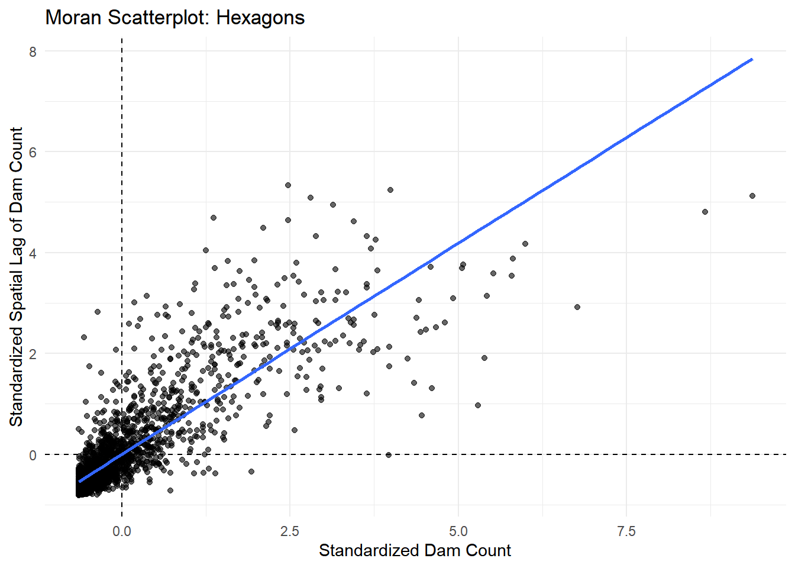
p_county_moran <- plot_moran(county_lisa_map, "Moran Scatterplot: Counties")
p_county_moran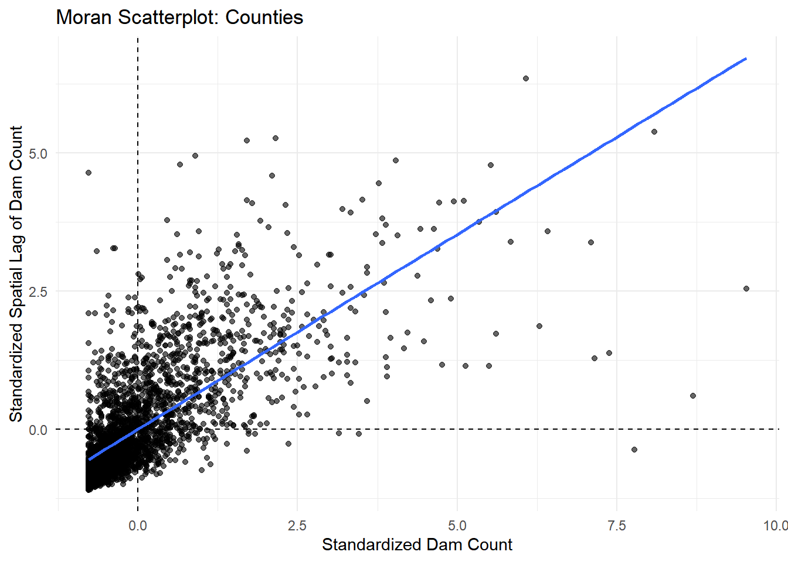
Lisa Geographic Maps
lisa_colors <- c(
"HH" = "red",
"LL" = "blue",
"HL" = "yellow",
"LH" = "cyan",
"Axis" = "grey80"
)plot_lisa_map <- function(sf_obj, title_text) {
ggplot(sf_obj) +
geom_sf(aes(fill = quadrant), color = NA) +
scale_fill_manual(values = lisa_colors, drop = FALSE) +
theme_void() +
labs(
title = title_text,
fill = "LISA Quadrant"
)
}p_hex_lisa <- plot_lisa_map(hex_lisa_map, "LISA Map: Hexagons")
p_hex_lisa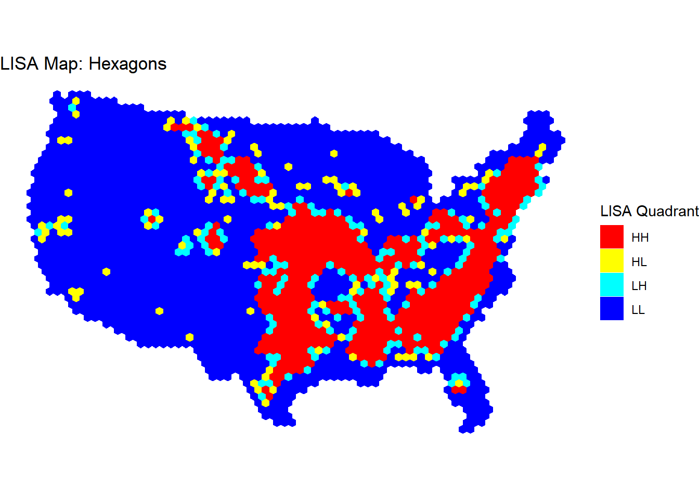
p_county_lisa <- plot_lisa_map(county_lisa_map, "LISA Map: Counties")
p_county_lisa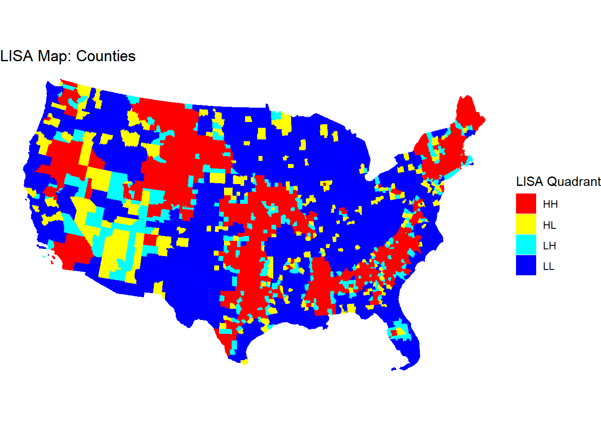
Step 6.4
Comparison Map
(p_hex_lisa | p_county_lisa) +
plot_annotation(title = "LISA Comparison of Dam Count: Hexagons vs Counties")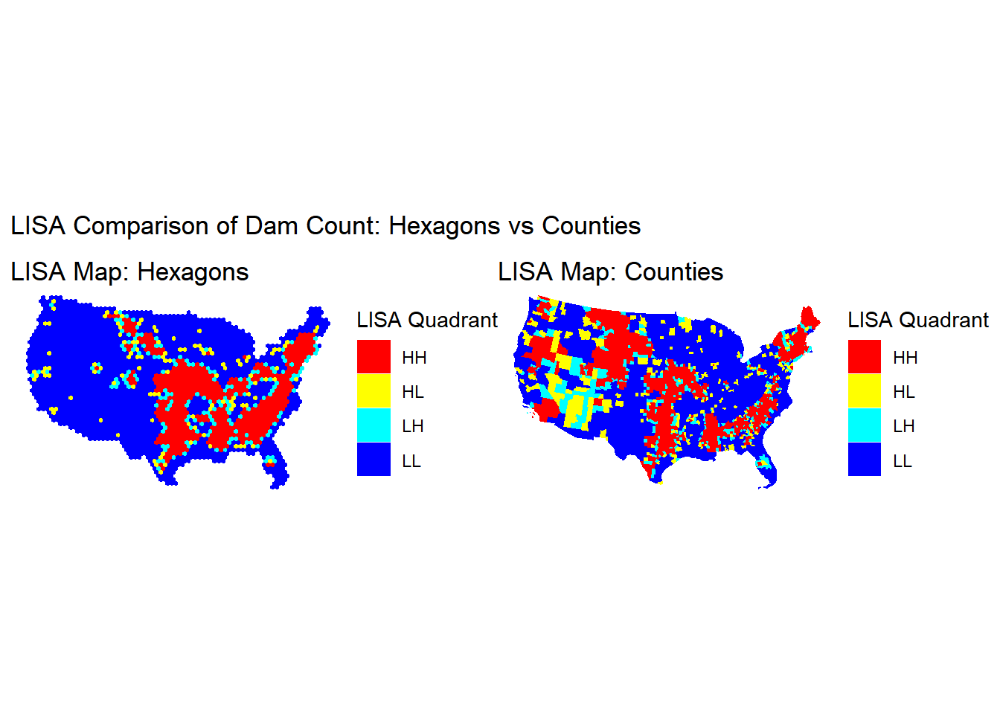
Count polygons for each quadrant
hex_quad_counts <- hex_lisa_map %>%
st_drop_geometry() %>%
count(quadrant)
hex_quad_counts# A tibble: 4 × 2
quadrant n
<chr> <int>
1 HH 523
2 HL 113
3 LH 169
4 LL 1492county_quad_counts <- county_lisa_map %>%
st_drop_geometry() %>%
count(quadrant)
county_quad_counts# A tibble: 4 × 2
quadrant n
<chr> <int>
1 HH 760
2 HL 228
3 LH 321
4 LL 1799Interpretation:
The hexagonal tessellation reveals spatial clustering more clearly for this analysis. Since all hexagons are uniform in size and shape, the resulting LISA map shows smoother, more continuous hotspot (HH) and coldspot (LL) regions. This makes it easier to identify broad geographic patterns in dam density without distortion from irregular boundaries. In contrast, counties vary significantly in size and shape, which introduces artificial variability into the analysis. As a result, the county-based LISA map shows more fragmented clustering and a higher number of HL and LH tiles, making patterns appear noisier and less spatially coherent.
Despite these differences, the overall patterns between the two units align at a regional scale. Both hexagons and counties identify strong HH clustering in the eastern United States and widespread LL coldspots in the western U.S. However, MAUP creates divergence at the local scale. Counties tend to exaggerate local variability due to administrative boundaries, while hexagons produce a more generalized and spatially consistent pattern. This demonstrates that while broad conclusions are robust, local clustering structure is sensitive to the choice of spatial unit.
Step 6.5 Geographic Interpretations and Management Implications
The LISA maps reveal clear geographic patterns in dam clustering across the United States. High-high (HH) hotspots are concentrated in the eastern U.S., particularly in the Southeast and along major river systems such as the Tennessee River Basin. These regions contain dense networks of dams, potentially associated with large-scale water management systems like the Tennessee Valley Authority (TVA). In contrast, low-low (LL) coldspots dominate much of the western U.S., especially in arid and mountainous regions where dam density is lower due to limited surface water availability and lower population density. These patterns reflect both natural hydrology and human water demand, with wetter regions supporting more infrastructure and drier regions relying on fewer, larger systems.
A clear example of an HH hotspot is the Tennessee Valley region. Dam clustering here can be explained by three key factors: a dense and interconnected river network that supports multiple dam sites, historical investment through the TVA which led to coordinated construction of dams for flood control, hydropower, and navigation, and high regional demand for electricity and water management, which required integrated infrastructure. These factors combine to produce a highly concentrated and spatially connected dam network, which is visible in both tessellations.
Some HL and LH tiles appear along the boundaries between high-density and low-density regions. These outliers may represent transitional zones where local conditions differ from surrounding areas. For example, a high-low (HL) tile may indicate a large dam or cluster of dams located in an otherwise low-density region, such as a major reservoir in the western U.S. Conversely, a low-high (LH) tile may occur in a sparsely developed area adjacent to a dense river system. These anomalies are important because they highlight locations where local infrastructure does not match regional trends, potentially requiring more insight.
The comparison between hexagons and counties demonstrates how MAUP affects local spatial analysis. While both units identify similar large-scale clustering patterns, counties produce more fragmented and irregular LISA classifications due to their uneven size and shape. This leads to more HL and LH classifications, suggesting greater variability. In contrast, hexagons provide a more stable representation of clustering. From a management perspective, HH hotspots indicate regions where coordinated water management efforts may be most important, while LL coldspots represent areas with simpler infrastructure and fewer management challenges. These findings are consistent with the patterns found in Question 4, where dam purposes also clustered regionally (irrigation in the West, hydropower in mountainous areas). Overall, LISA analysis highlights both broad regional patterns and localized anomalies, providing valuable insight for targeted policy and resource management.